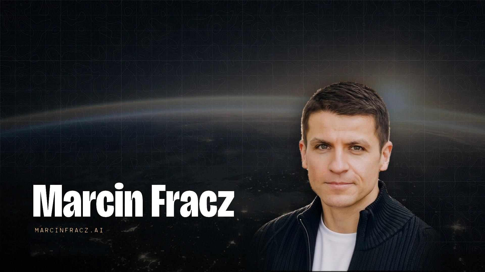
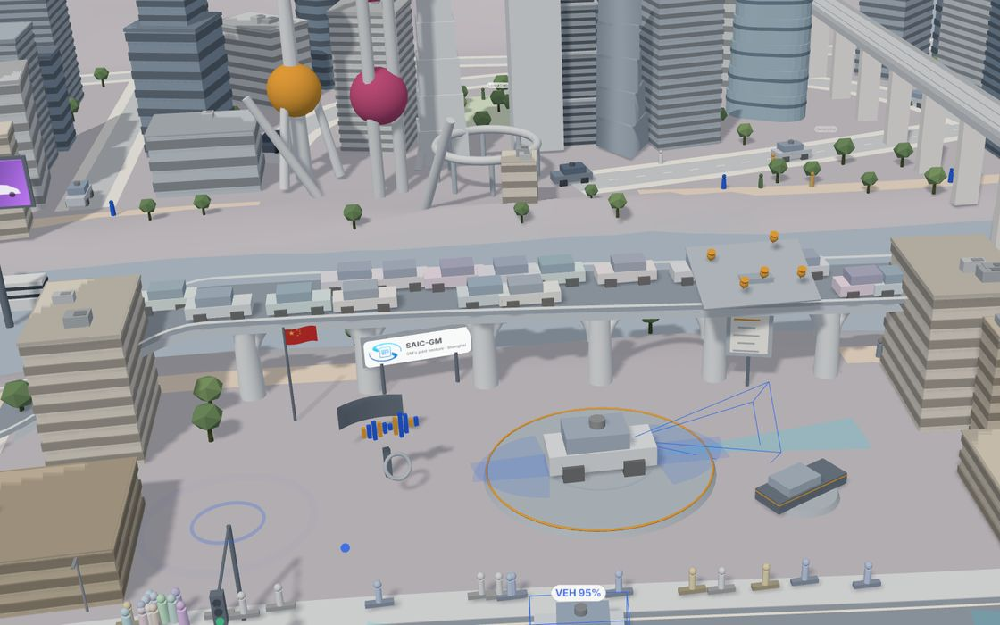
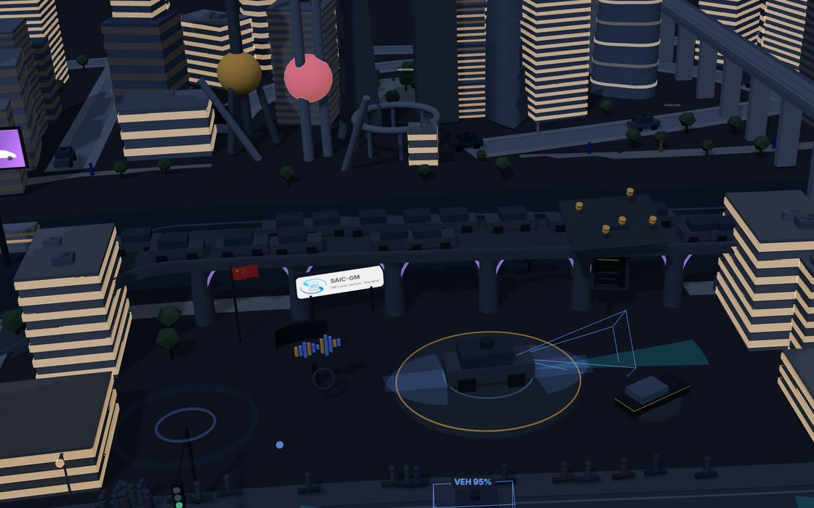
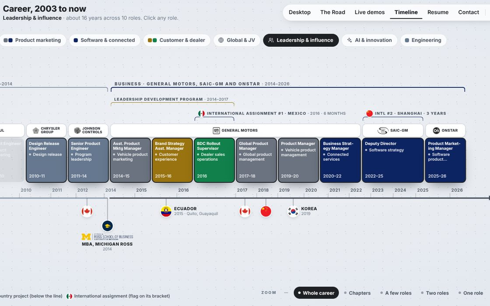
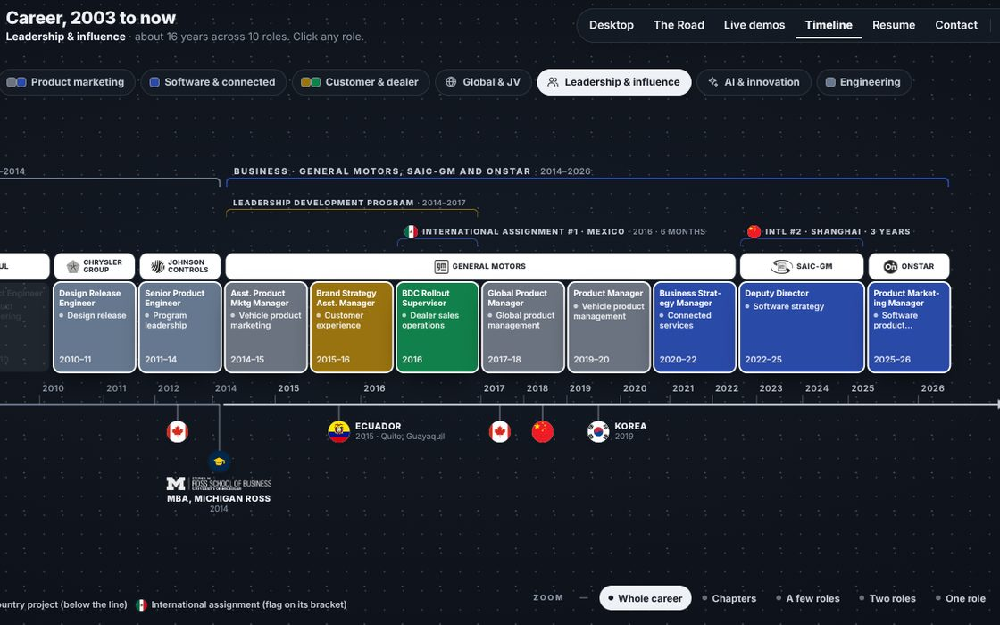
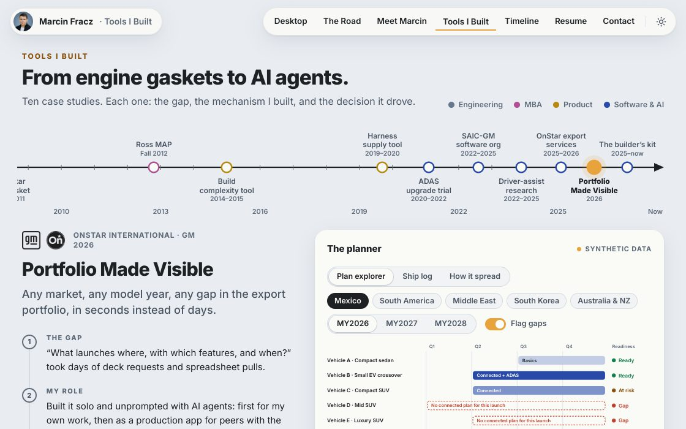
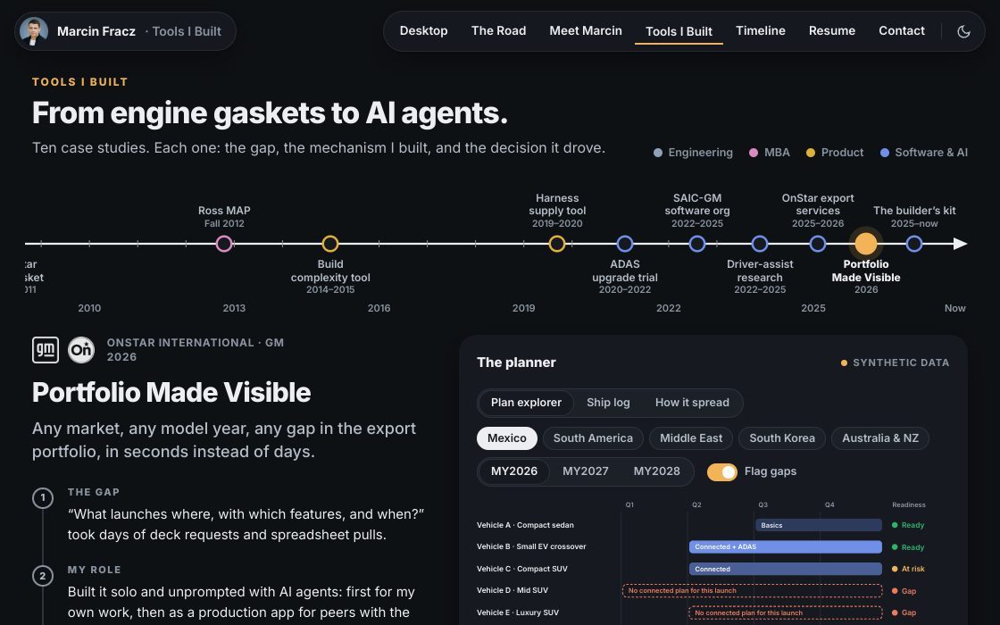

Explore


The Road
The career as a drive, stop by stop: what I led, where, and what changed because of it.


Timeline
Every role from 2003 to now on one line, with lenses for product, software, global and leadership.


Tools I Built
Working tools I built for export launches, JV strategy and portfolio planning, on synthetic data.
Prefer the whole picture? Open the Desktop.